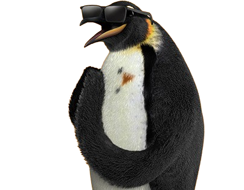

Ponto Frio
A Trajetória do Ponto Frio
O Ponto Frio foi fundado em 1946, no Rio de Janeiro, por Alfredo João Monteverde, um empresário romeno que imigrou para o Brasil fugindo dos conflitos da Segunda Guerra Mundial. Inicialmente, a loja era especializada na venda de refrigeradores, o que inspirou o nome "Ponto Frio". Com o passar do tempo, a empresa diversificou seu portfólio, ampliando a oferta para incluir eletrodomésticos, móveis, eletrônicos e outros bens de consumo, posicionando-se como uma das maiores redes varejistas do Brasil.
Após a morte de Monteverde em 1969, a gestão da empresa foi assumida pela Fundação Monteverde, uma entidade filantrópica que utilizava os lucros do negócio para causas sociais. Na década de 1990, o controle do Ponto Frio foi vendido ao Grupo Sendas, marcando uma nova fase de expansão e modernização da marca. Em 2009, o Ponto Frio foi adquirido pela Via Varejo, grupo que também controla as Casas Bahia, consolidando-se como um dos principais nomes do varejo nacional. Uma curiosidade marcante é que a marca Ponto Frio sempre esteve associada a inovação no varejo, sendo uma das primeiras a investir em vendas online no Brasil, fortalecendo sua presença no mercado digital.